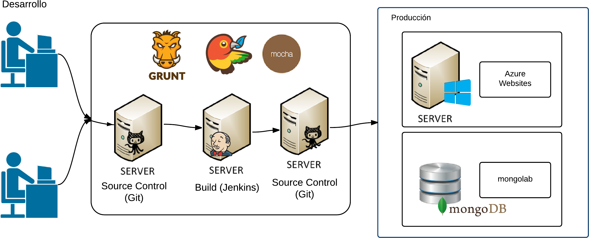

Animates
Sitio web para la creación
colaborativa de animaciones
Alumnos
- Nicolás Bello Camilletti (86676)
- Pablo Biasotti (84371)
Idea
Motivación
- Limitación de herramientas existentes
- Oportunidad para utilizar tecnologías innovadoras
Componentes

Flujo de operaciones de desarrollos

Servidor
- Node.js
- Express.js
- socket.io
- passport.js
- mongosee
Dev Ops
- JavaScript
- Grunt.js
- Jenkins
- Mocha.js
- should.js
- Brosefy.js
- git
- jshint
- yeoman
- bower
- npm
Base de datos
Componentes del diseño

Demo
Estadisticas
Graficos de github
Jenkins
Tiempos de desarrollo
Problemas encontrados
- Tecnologias no conocidas por nosotros
- Tecnologias en desarrollo
- Gran cantidad de tecnologias
- Integración de tecnologias
- JavaScript
- Deployment
- Plan to throw away
Tecnologias
- Node.js
- Angular.js
- Dev Ops
- Canvas
- Mongo
Metodologias
- Desarrollo iterativo e incremental
Posibles Mejoras
- Creacion del video
- Creacion de la imagen preview
- Soporte para sonido
- Soporte cross browser
- Zoom en el canvas
- Soporte de escenas
- Visualización de los otros usuarios
- Mejorar usabilidad
- Integración con redes sociales